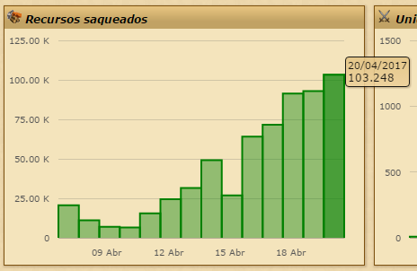

Mirror Fashion.
Bem-vindo à Mirror Fashion, sua loja de roupas e acessórios.
Nossa loja foi feita para você!
Listas:
As listas mais comuns são as não-ordenadas
- Primeiro item da lista
- Segundo item da lista:
- Primeiro item da lista aninhada
- Segundo item da lista aninhada
- Terceiro item da lista
- Confira nossas promoções.
- Receba informações sobre nossos lançamentos por email.
- Navegue por todos nossos produtos em catálogo.
- Compre sem sair de casa.
Aqui temos uma lista ordenada:
O conteúdo desta tag será exibido em azul com fundo amarelo no navegador!
- Primeiro item da lista
- Segundo item da lista
- Terceiro item da lista
- Quarto item da lista
- Quinto item da lista
Visite o site da Caelum.
Mais informações aqui.
Conteúdo da página...
- HTML
-
HTML é a linguagem de marcação de textos utilizada
para exibir textos como páginas na Internet.
- Navegador
-
Navegador é o software que requisita um documento HTML
através do protocolo HTTP e exibe seu conteúdo em uma
janela.
Nenhum item na sacola de compras.
Um parágrafo de texto.
Outro parágrafo de texto.
Outro parágrafo de texto STRONG FORTE.
Agora com "ênfase acentuada", chamado itálico.
Esse diminui o tamanho do texto.
Compre suas roupas e acessórios na Mirror Fashion.
pode-se usar também < b > e < i >, porém strong e em é melhor

Fuz Cardigan por R$129,90
Mais informações sobre o assunto:
Informações...
Aqui temos informações de mais para serem contadas para todos vocês. Amigos e amigas das redes sociais contenporâneas.
Entre em contato sobre o curso

© Copyright Mirror Fashion